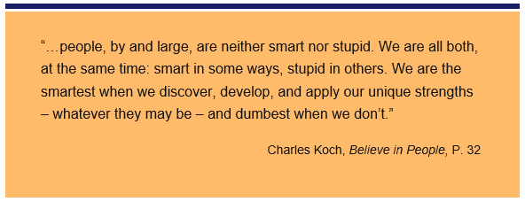
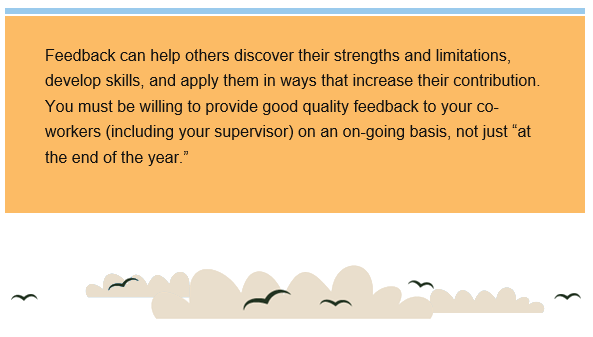
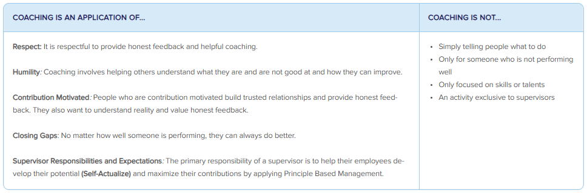
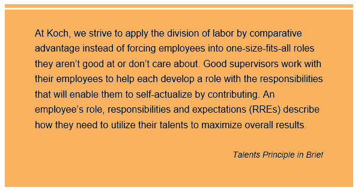
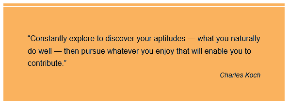
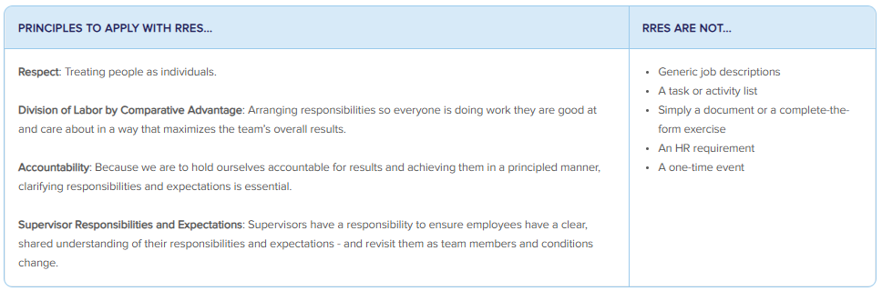
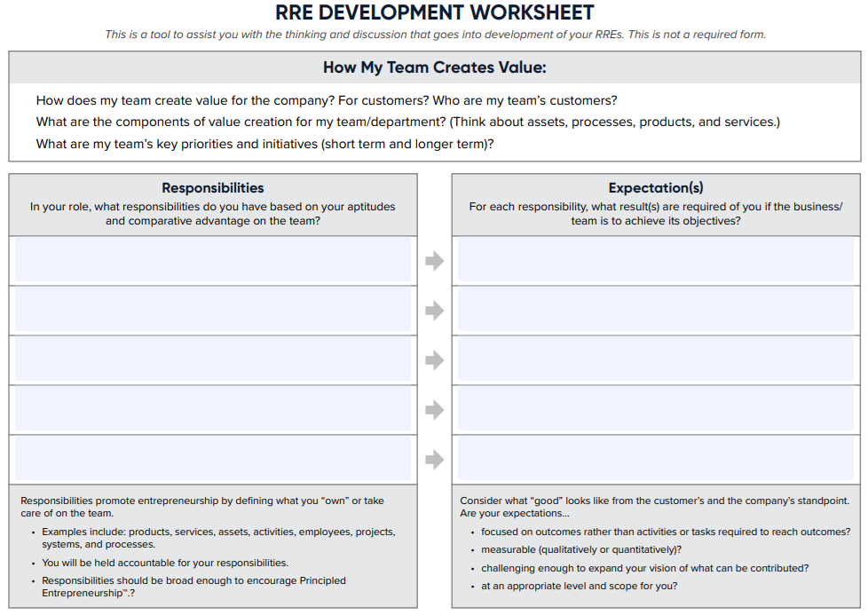

When we discover and leverage our gifts, we make life better for ourselves and for others. Psychologist Abraham Maslow called it synergy - where work becomes a source of pleasure and fulfillment. While there are aspects of any job that aren't much fun, when you are doing work that leverages your gift(s), generally...
1) work is energizing rather than draining
2) you are optimistic, rather than doubtful, about your ability to achieve superior results
3) you learn from failures rather than being discouraged by them
Consider: Learning from others can help you identify and better understand your gifts.
Talk with someone who is further along in their career about how they ended up doing the work they do. Ask them questions like:
1) How has your career been different from what you imagined when you first started working?
2) How did you learn about your gifts and aptitudes (or lack thereof)? How did you change your career path as your learned?
Resource:
Life of Meaning and Synergy
Viktor Frankl, a psychiatrist and Holocaust survivor, believed that we all need “the striving and struggling for some worthy goal…the call of a potential meaning waiting to be fulfilled. . . . That the more one forgets himself – by giving himself to a cause to serve, or another person to love – the more human he is and the more he actualizes himself.”
While imprisoned, he learned that even when experiencing great difficulty, we have the power to choose our response. He gave the example of “men who walked through [the concentration camp] comforting others, giving away their last piece of bread.” Those who did so had a better chance of surviving, because it gave them a reason to live. Frankl also taught that when people have no meaning in their lives, they default to the destructive paths of power or pleasure.
Psychologist Abraham Maslow believed that this pursuit of meaning is a deeply personal journey because everyone differs in their aptitudes, interests, goals, experiences and circumstances. We increasingly self-actualize as we learn about ourselves – what we care about as well as what we are and are not good at. This better enables us to contribute and succeed, and help others do the same.
In Maslow’s view, we most fully self-actualize when we can achieve what he called synergy by resolving the “dichotomy between selfishness and unselfishness…when by pursuing [our] own self-interest, [we] automatically benefit everyone else, whether [we] mean to or not.” He believed it was possible for societies and organizations to create these conditions.
Maslow and Frankl found that people prefer meaningful work to meaningless work. Studies have found some janitors to be among the most self-actualized hospital employees. Those in hospitals that enable them to understand how they contribute to the well-being of patients and the smooth functioning of the hospital can experience deep satisfaction and meaning in their work. Similarly, Maslow explained that "washing the dishes can be the most meaningless chore or it can be a symbolic act of love for one’s family.” Thus, what’s important is not the nature of the work itself but our understanding of its purpose and who it is helping.
As employees, we find greater meaning in our work when we understand how it contributes to improving other people’s lives and the overall success of the company. Feedback, recognition and rewards help us understand what is valued by others, thereby enabling ourselves and others to experience greater synergy, and our organization and society to experience greater success.
Developing your gifts is win-win!
At this organization, we believe discovering, developin, and using your gift(s) is essential and mutually beneficial! It's good for you because you can use your talents in a way that is meaningful and fulfilling, and it's good for the company because employees using their gifts allows us to create more value for customers and society.
Ideas for Action to Continue Discovering and Developing Your Gifts:
1) Think broadly about gifts. They don't have to be "traditional" school subjects, like mathematical ability. Gifts can be things like the ability to ask good questions, develop relationships, anticipate problems or see how things fit together.
2) This Personal Reflection Worksheet can spark insights about your natural abilities, strengths and limitations. Consider discussing this with your supervisor.
3) CliftonStrengths (formerly StrengthsFinder) is an online, third-party assessment (purchase required) that can give you a sense of talents you might develop into strengths. (We do not recommend using this tool as the basis for workshops or mandated training.)
Actions and Questions for Consideration:
1) Talk with friends, family, and coworkers about their perspectives on your gifts and aptitudes. Be open to their observations and feedback.
2) Reflect: What internal barriers might be preventing you from exploring and discovering your gifts?
3) What are some things you're interested in or drawn to, even though you may not have tried them yet? Talk to your supervisor about how you might explore these areas of interest.

Gifts are innate abilities or aptitudes that can be developed into valuable skills. Because people sometimes overlook or undervalue their own gifts, it's helpful to tell your coworkers about the abilities you see in them. This is especially true when their gifts don't fall into traditionally recognized categories (like subjects taught in school).
For example: if you notice that a coworker naturally networks and connects with people, sharing that observation could lead her to developing and using that gift in various ways.
Your feedback can help others understand what they are good at... and what they're not good at. And both are eseential for a person to discover their gifts.

Ideas for Action: Think about someone you work with closely. What strengths have you observed in that person? Share your observations - provide specific examples and explain why you think this gift is valuable.
Resources:
Coaching and Feedback
"Everyone deserves to understand how they’re doing and how they can improve."
Everyone Can Coach
We’re all expected to seek and provide feedback – and even provide coaching when we can help others improve. Good coaches make the people around them better and more productive – and you don’t have to be a supervisor to provide coaching!
Feedback: Providing a reaction or response to a specific action, idea or situation.
Example: I think you should put a summary paragraph at the top of your recommendation.
Coaching at Organization: Purposefully helping others so they can understand and apply our principle-based framework to realize their potential and maximize their contribution to the team and organization's long-term success.
Example: I think you should put a summary paragraph at the top of your recommendation – to provide useful knowledge to the people who will review your proposal. I’d be happy to work with you to figure out the most essential information to include in it.
Charles Koch: "You can coach your teammates, your supervisor, and others around you to help them improve. And don’t forget that all of us have room to improve—even CEOs.”
A Principle-Based Approach
It is important to understand the principles that inform our approach to coaching. Without this knowledge, misapplications often occur. Here are some common misapplications (Coaching is NOT...) and principles we strive to apply instead.

Examples: Offering Coaching
While supervisors will do a lot of coaching, we are all expected to help one another improve. Here are some examples of what it might look like to coach...
Your Supervisor: Rachel recently explained to her supervisor, Luis, that during team meetings he regularly offers ideas and suggestions before others have a chance. She uses specific examples to describe how his behavior often discourages others from offering challenge. Now, Luis is intentional about seeking ideas and challenge from others.
A Co-worker: Maria and Jake have worked together on the safety committee for about a year. Jake’s coaching has helped Maria sharpen her communication skills and improve her ability to provide direct, valuable feedback. Over time, she realizes that she really likes helping others develop, so she decides to pursue a supervisor role.
Someone More Experienced: Ora is early in her career and Jing has been in sales for over 20 years. Ora notices that Jing is uncomfortable using their team’s new AI tool. She offers to help Jing learn to use it effectively. The two work together for several weeks until Jing is confident using the AI tool on her own.
Someone You Don't Know Well: Reina needs to learn more about database management. She uses EverLearn to connect with Filip, who eagerly shares his knowledge and provides assistance as she learns. After a few coaching sessions, Reina gained enough knowledge to continue her learning using online resources. Filip offers to assist her if she has questions along the way.
Demonstrating Courage: Uncomfortable Conversations
People who are contribution motivated want to know if they are not doing well or if they are engaging in behavior that is problematic, yet people in the best position to provide that feedback and coaching often shy away from it. It is essential, especially for supervisors, to demonstrate courage and have uncomfortable or difficult coaching conversations. Here are a few tips:
1) Assume people want the truth and can handle it.
2) Address issues early because they typically get worse over time.
3) Approach the conversation with a “I want you to be successful” attitude and view this as an investment in the person.
Here is an example: Gianna joined the company a few months ago. She has a lot of valuable knowledge and experience that can really benefit the team, but the way she is engaging with co-workers and other teams is problematic. Her supervisor, Evan, schedules a meeting separate from their monthly one-on-one to address this with Gianna. He provides examples and clearly communicates the expectation for employees to live Our Values, especially Humility and Respect. Evan wants Gianna to be successful, so he invests in her development by coaching for behavior, not just skills.
Examples: Receiving Coaching
Responding productively to coaching is critical for your development. Being defensive, protectionist or resistant to change prevents you from growing and benefiting from coaching. When you are contribution motivated, however, you use principles to grow and improve.
Humility
One key aspect of reacting to coaching with humility is focusing on reality. For example, when you receive coaching and the coach needs more information, share it. This can sound like, “I’m flattered you think I can lead the team, but I really love doing hands-on engineering. I don’t think I’d like being the leader.”
Another aspect of being coached with humility is reflecting, thinking about the actions you need to take and doing something with it. This might sound like, “In this upcoming meeting, can you pay attention to whether I’m speaking up enough? I’m trying to be more proactive about offering challenge.”
Self-Actualize: Another aspect of being coached with humility is reflecting, thinking about the actions you need to take and doing something with it. This might sound like, “In this upcoming meeting, can you pay attention to whether I’m speaking up enough? I’m trying to be more proactive about offering challenge.”
Changing Paradigms: Coaching can help you identify when you need to change your paradigms – if you’re open to it. This might sound like, “Hmm, I do need to investigate how AI might impact how things are done in our industry” or “You’re right, I haven’t spent enough time staying connected to the most current processes. I’m going to explore more.”
Transformation: Coaching can highlight how you need to transform and guide you as you strive to transform. This can include:
1) Setting goals and having a coach who holds you accountable for milestones along the way.
2) Brainstorming ways to gain the skills and knowledge you need to transform.
3) Pointing out the progress you’re making.
How is Coaching Related to Other Aspects of Employee Development?
In many ways, coaching is what ties together the various aspects of our approach to employee development. Things like training, formal feedback and stretch opportunities are more effective when combined with on-going coaching and feedback.
Cara Chennault-Reid, Vice President – Human Resources, Koch: “You have to look at your entire team... and each individual is going to need something different.”

During the RRE process, supervisors strive to arrange responsibilities among team meambers to maximize value creation and help each employee increasingly self-actualize. This means each team member's gifts must be part of the consideration. One way you can help your supervisor is by sharing what you think your gifts are and how you can best use them in your work.
Questions for You and Your Supervisor to Discuss:
1) Which of your gifts do you feel you can use even more in the coming year?
2) Are there gifts you don't feel you're using? How might they fit into the work the team needs to accomplish?
3) Is there something you're responsible for that doesn't match up with your gift(s)? Why?
4) Are there any exceptions that could be "stretch goals" to help you further discover or develop a gift?

Resources:
Roles, Responsibilities, & Expectations (RREs)
Dave Robertson, Co-CEO and Vice Chairman of Koch, Inc.: Good supervisors or leaders need to connect their employees to the vision, the strategies and the priorities of the business...[RREs] should be developed between supervisors and employees...to help guide what the employee works on.
What are RREs?
Role, Responsibilities and Expectations help you and your supervisor work together to ensure your ROLE is an individualized bundle of responsibilities and expectations that fit your aptitudes and interests and help you make the greatest contribution relative to others.
RESPONSIBILITIES define what you “own” or take care of based on comparative advantage. You are held accountable for your responsibilities. Examples include products, services, assets, activities, employees, projects, systems, and processes.
EXPECTATIONS focus on the desired outcomes rather than on the activities that might be required to produce those outcomes. They should be clear, specific, and, whenever possible, measurable.
A Principle-Based Approach
It is important to understand the principles that inform our approach to RREs. Without this knowledge, misapplications often occur. Here are some common misapplications (RREs are NOT...) and principles we strive to apply instead.

What Does Developing Your RREs Look Like?
Fundamentally, developing RREs is a series of ongoing conversations with your supervisor. You will discuss and consider:
1) Your business/team vision and associated strategies, goals and objectives.
2)The nature of the work and what good looks like.
3) Your gifts, skills, interests, development opportunities and possible stretch assignments.
4) The gifts, skills and interests of other team members.
While many people find it beneficial to summarize their RREs in a document, that’s not the primary goal. Creating a document without conversations and a shared understanding is wasteful.
You might find the RRE Development Worksheet to be helpful as you work with your supervisor to define your responsibilities and expectations.

How Do You Use Your RREs?
You should use your RREs to focus your efforts and increase your contribution by…
1) Understanding how your work contributes to business results
2) Prioritizing work and eliminating waste
3) Leveraging your gifts and demonstrating entrepreneurship
4) Exemplifying stewardship with the resources entrusted to you
Examples: RRE Conversations
Developing and using your RREs to focus and increase your contributions is an ongoing process – one that prompts you to adjust as conditions change. Here are a few examples of RRE conversations.
Change in Vision or Priorities: Ari’s supervisor recently explained how their business strategy is changing from a regional support model to a national support model. In a one-on-one meeting, Ari describes how he sees his responsibilities changing – including dropping one that is no longer a priority. Ari’s supervisor agrees, and they spend the rest of the meeting exploring what good looks like.
Someone Leaves the Team: Evelyn supervises the marketing team. An employee recently left the team, so Evelyn talks to each team member about how they might adjust their responsibilities. Each shares new responsibilities they want to take on and responsibilities they want to de-prioritize or give up completely. Evelyn takes time to consider everyone’s input and then works with each to adjust their RREs.
Too Much Work: Remi’s work seems to come in waves – he's either slightly overwhelmed or completely overwhelmed. He talks to his supervisor about it, and she is surprised to learn how much Remi is doing when things are busy. Together they discuss different ways to smooth out the workload. While this is just the beginning of an ongoing conversation, Remi is pleased they’re working together to address it.
Too Little Work: Fern gets done with her primary tasks quickly and is ready to do more, so she talks to her supervisor about taking on more responsibilities. They discuss various ideas, including a few stretch assignments, and decide to get back together next week after Fern considers what she is most interested in trying.
How Are RREs Related to Other Aspects of Employee Development?
RREs are one aspect of employee development—because each of us can develop through the work we are doing. All employee development activities have a purpose and are interrelated.